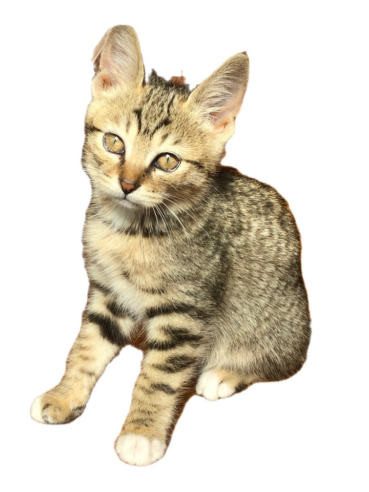

FAVE
My little angel
WAVE
ppozzi
WYSWM?
9月18日
SEOL, SEOL, SEOL, SEOL everybody na! i'm joun dat mari thora thong kka
ay oh my zzigaezzigae oh my gimchizzigae oh my a,a,a,a,
am

oh my god
ding ga ding ga kkanari kkarari kakami thomikka, migimigi thomikka !!
Please enable JavaScript to view the
comments powered by Disqus.